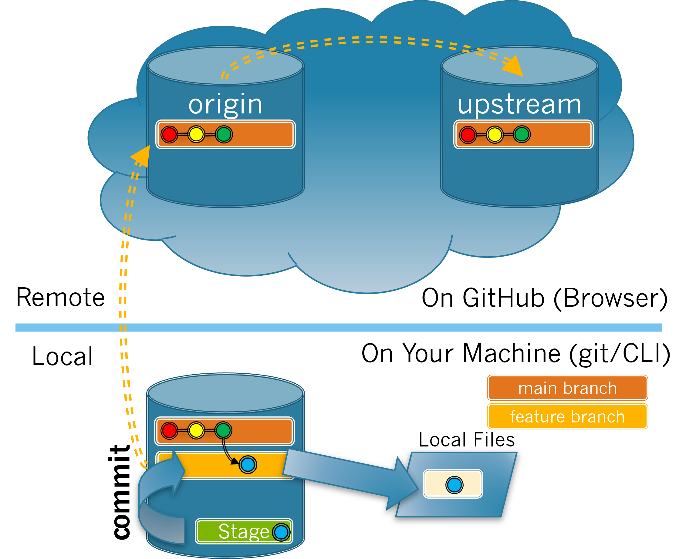

In this section you will do the work necessary to commit the changes made to your Local Files to your local repository. The process of committing changes is illustrated in Figure 3.6.1.

Figure3.6.1.Committing changes.
Exercises
1.
As you saw earlier when looking at the output of git log, each commit has a commit message that briefly describes the changes that are contained in the commit. These messages should be concise but meaningful without requiring the reader to refer to the ticket in the issue tracker. A future reader of the git log output should be able to obtain an idea of the changes you have made and why you made them by reading your commit messages.
For each of the following issues, order the given commit messages from best (listed first) to worst (listed last).
(a)
Issue: The documentation says “bug” instead of “bugs” where plural is needed.
Pluralize bug (i.e. bugs) for clarity
---
Fix issue #123
---
Fix typo
Hint.
Commit messages should be as specific as possible regarding the changes made. Something like "fix typo" is too generic as it can apply to lots of different changes.
(b)
Issue: The harvesting log should be able to track insect presence.
Add tracking for insects in harvesting logs
---
Insect tracking added
---
Extend harvest logs
Hint.
Commit messages should be as specific as possible regarding the changes made. Which of the messages provides information about what is added and where?
2.
The git commit -m "<message>" command commits all of the staged files to the currently active branch with the specified commit message.
Write a git commit command for the change you made in the space below. Be sure to include a meaningful message.
3.
Use the git commit command you wrote in Exercise 3.6.2 to commit your staged changes to your local repository with a meaningful commit message.
Look at the output produced.
It shows the name of the file changed in [].
The first part of the first line is not the file name, take another look at the output.
It shows the name of the feature branch that contains the change in [].
The first part of the first line is the feature branch name.
It shows the SHA code of the commit in [].
The second part of the first line is the SHA code of the commit.
It shows the commit message.
The last part of the first line is the commit message.
It shows the number of files changed.
The first part of the second line is the number of files changed.
It shows the number of lines inserted.
The second part of the second line is the number of lines inserted.
It shows every line that was inserted and/or deleted.
The output should not show the individual line changes, rather a summary of the changes.
Hint.
There should be two lines of output. The first will provide 3 different pieces of information. The second provides what additional information?
4.
(a)
Now use the git status command again. Compare your output to the output in Task 3.4.3.a. What two changes have occurred that reflect that your changes have been staged?
No files appear listed as modified in red (meaning they are unstaged).
No files appear listed as modified in green (meaning they are staged).
The output states "nothing to commit".
All of the above.
(b)
How do you know your changes have been committed?
Option 1
Feedback 1
Option 2
Feedback 2
Option 3
Feedback 3
Option 4
Feedback 4
Hint.
Hint here
(c)
Use the git log command to show the 3 most recent commits to your branch. Refer back to your output from Task 3.1.2.1.b.
Option 1
Feedback 1
Option 2
Feedback 2
Option 3
Feedback 3
Option 4
Feedback 4
Hint.
Hint here
(d)
Switch to your main branch. What command did you use?
git status
git status shows what files have been changed and staged.
git stage main
git stage main is not a proper command.
git branch main
git branch main would try to create a new branch named main.
git switch main
Correct!
Hint.
To change the active branch you need to switch to it.
(e)
The output of the git log command now shows the information about the commit you made.
True.
False.
Hint.
What branch are you on, the main branch our your feature branch? In which branch did you make your changes?
(f)
The commit is not shown in the git log output because:
You are on the main branch and the commit is on the feature branch.
Correct!
You are on the feature branch and the commit is on the main branch.
You should be on the main branch.
The git status command should be used to show the commits.
The git status command is used to see what files have been changed and staged.
It only shows the first commit made, not every commit.
The git log command will show multiple commits with the most recent appearing first.
Hint.
Commits are specific to branches. You must be on the proper branch to see a commit.